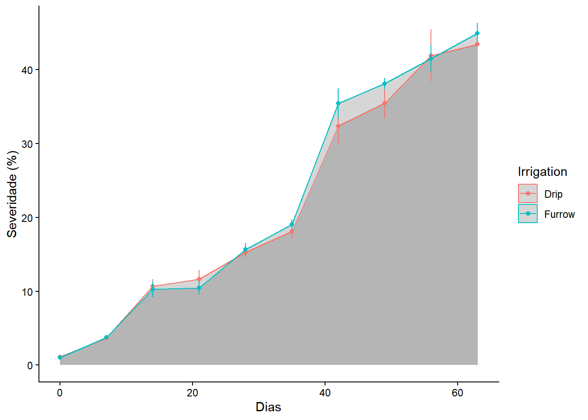
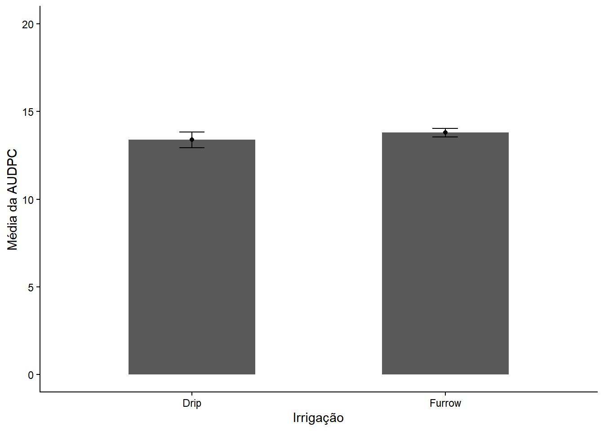
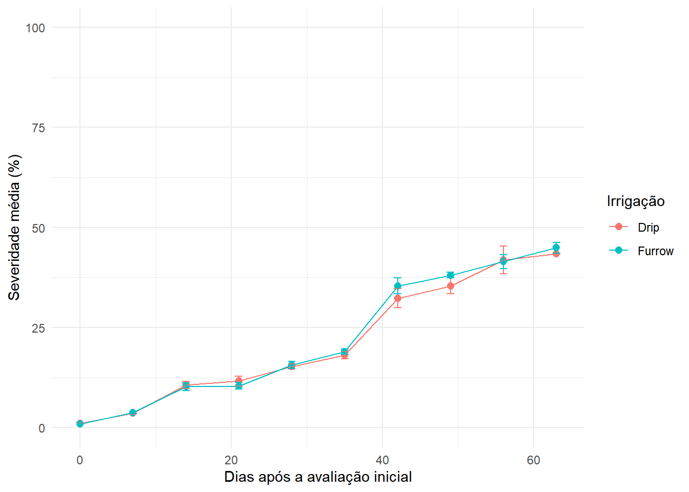
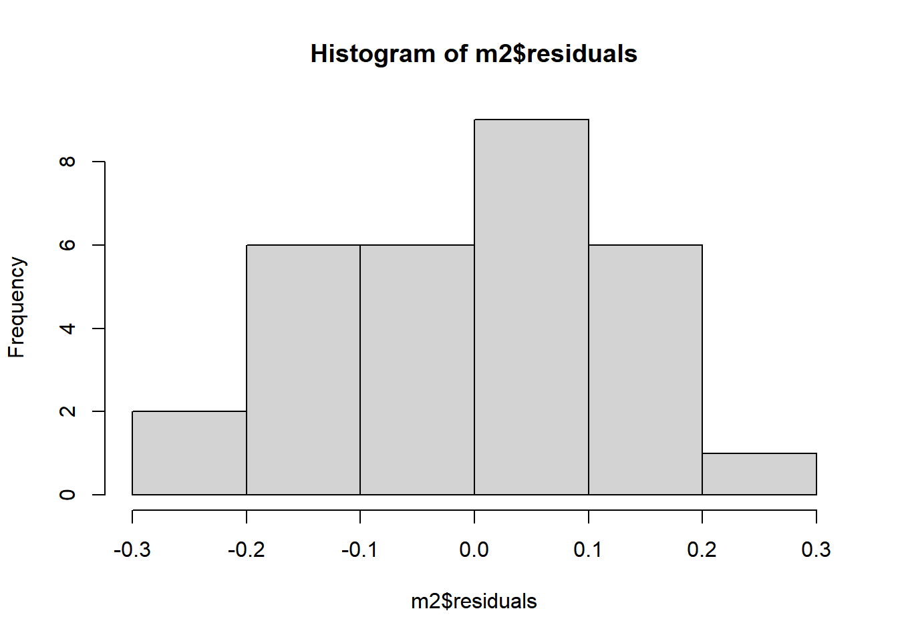
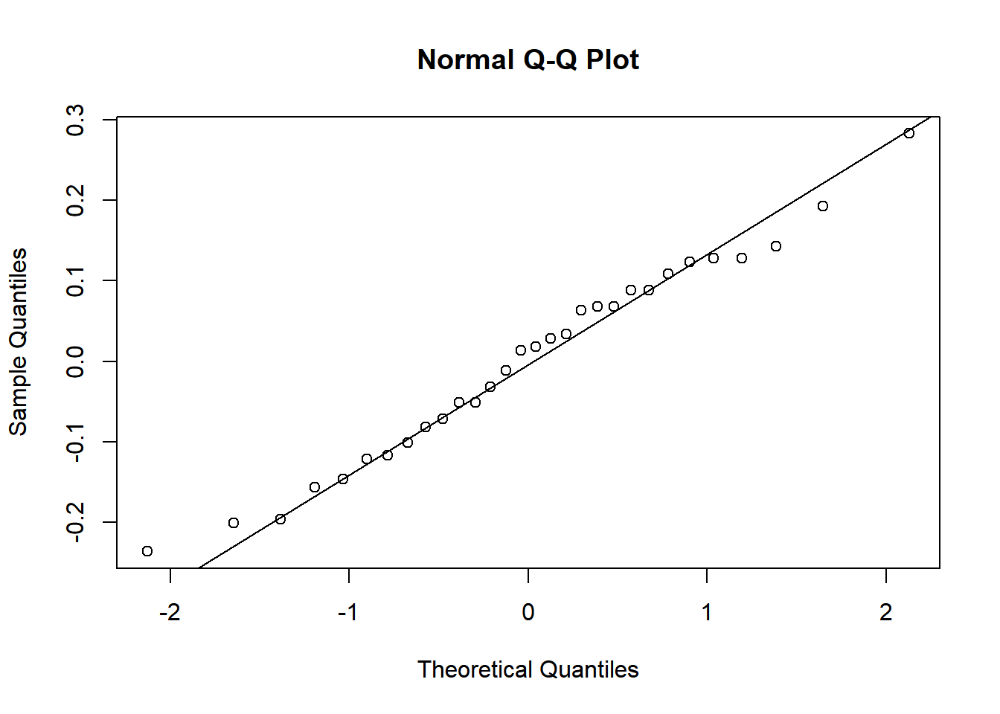

Aula4: Análise de Progresso de Doença e Comparações
Importação e Cálculo de Área Abaixo da Curva de Progresso da Doença (AUDPC)
O cálculo da AUDPC é amplamente utilizado em fitopatologia para quantificar a severidade da doença ao longo do tempo. Nesta seção, vamos calcular a AUDPC a partir de um conjunto de dados e criar gráficos relacionando a irrigação com a severidade.
library (tidyverse)
── Attaching core tidyverse packages ──────────────────────── tidyverse 2.0.0 ──
✔ dplyr 1.1.4 ✔ readr 2.1.5
✔ forcats 1.0.0 ✔ stringr 1.5.1
✔ ggplot2 4.0.2 ✔ tibble 3.3.0
✔ lubridate 1.9.4 ✔ tidyr 1.3.1
✔ purrr 1.2.1
── Conflicts ────────────────────────────────────────── tidyverse_conflicts() ──
✖ dplyr::filter() masks stats::filter()
✖ dplyr::lag() masks stats::lag()
ℹ Use the conflicted package (<http://conflicted.r-lib.org/>) to force all conflicts to become errors
library (readxl)library(ggplot2)library (epifitter)# Ler os dadosdados <-read_excel ("dados_diversos.xlsx", "curve")# Gráfico de Área da curva de progresso da doençadados |>group_by (Irrigation, day) |>summarise (mean_sev =mean(severity*100),sd_sev =sd(severity*100)) |>ggplot(aes(day, mean_sev, group = Irrigation, color = Irrigation))+geom_area(alpha =0.2, position ="identity")+geom_point()+geom_line()+geom_errorbar(aes(ymin=mean_sev-sd_sev,ymax=mean_sev+sd_sev), width=0.1)+labs(x="Dias", y="Severidade (%)")+theme_classic()
`summarise()` has grouped output by 'Irrigation'. You can override using the
`.groups` argument.

Sumarização e Gráfico de Barras com Desvio Padrão
Vamos utilizar as funções do pacote dplyr para calcular a AUDPC agrupada por parcela (Irrigação x Repetição) e, na sequência, obter a média e o desvio padrão de cada tratamento (Irrigação).
dados_audpc_plot <- dados |># 1. Calcula a estatística média e sd da AUDPCgroup_by(Irrigation, rep) |>summarise(audpc =AUDPC (day, severity), .groups ="drop") |>group_by(Irrigation) |>summarise(mean_audpc =mean(audpc),sd_audpc =sd(audpc), .groups ="drop") # 2. Faz o plotdados_audpc_plot |>ggplot(aes(Irrigation, mean_audpc))+geom_col(width=0.5)+geom_point()+geom_errorbar(aes(ymin= mean_audpc - sd_audpc,ymax = mean_audpc + sd_audpc),width=0.1)+ylim(0,20)+labs (x="Irrigação", y="Média da AUDPC")+theme_classic()

Gráfico de Barras com Intervalo de Confiança (IC)
Para alterar as suas barras de erro de Desvio Padrão (SD) para Intervalo de Confiança (IC) (normalmente usamos o IC de 95%), precisamos fazer um pequeno cálculo adicional dentro do summarise.
O Intervalo de Confiança é calculado usando o Erro Padrão (Desvio Padrão dividido pela raiz quadrada do número de repetições) multiplicado pelo valor \(t\) da distribuição de Student (que nos dá os 95% de confiança).
dados |># 1. Calcula a AUDPC por parcela (Irrigação x Repetição)group_by(Irrigation, rep) |>summarise(audpc =AUDPC(day, severity), .groups ="drop") |># 2. Calcula média, N, SD e o Intervalo de Confiança (95%)group_by(Irrigation) |>summarise(mean_audpc =mean(audpc),sd_audpc =sd(audpc),n_rep =n(), erro_ic =qt(0.975, df = n_rep -1) * (sd_audpc /sqrt(n_rep)),.groups ="drop" ) |># 3. Faz o plot com as margens de erroggplot(aes(Irrigation, mean_audpc)) +geom_col(width =0.5, fill ="lightgray", color ="black") +geom_point(size =3) +geom_errorbar(aes(ymin = mean_audpc - erro_ic,ymax = mean_audpc + erro_ic),width =0.1) +ylim(0, 20) +labs(x ="Irrigação", y ="Média da AUDPC (IC 95%)") +theme_get()

Teste T de Student
Verificando estatisticamente a diferença da média de AUDPC entre dois tratamentos de irrigação.
library(rstatix)
Anexando pacote: 'rstatix'
O seguinte objeto é mascarado por 'package:stats':
filter
dados_audpc <- dados |>group_by(Irrigation, rep) |>summarise(audpc=AUDPC(day, severity), .groups ="drop")t.test(audpc ~ Irrigation, data = dados_audpc)
Welch Two Sample t-test
data: audpc by Irrigation
t = -1.3773, df = 3.079, p-value = 0.26
alternative hypothesis: true difference in means between group Drip and group Furrow is not equal to 0
95 percent confidence interval:
-1.3421436 0.5231436
sample estimates:
mean in group Drip mean in group Furrow
13.38983 13.79933
Avaliação de Escalas e Acuidade Visual
Aqui analisamos se os avaliadores têm diferenças significativas nas estimativas visuais de doença com ou sem auxílio de escalas (Unaided vs Aided1).
Paired t-test
data: escala_wide$Unaided and escala_wide$Aided1
t = -4.4266, df = 9, p-value = 0.001655
alternative hypothesis: true mean difference is not equal to 0
95 percent confidence interval:
-0.3583453 -0.1159591
sample estimates:
mean difference
-0.2371522
Teste de Normalidade de Shapiro-Wilk
A Hipótese Nula (\(H_0\)) do teste de Shapiro-Wilk assume que os dados seguem uma distribuição normal. Se o p-valor for menor que 0.05, rejeitamos \(H_0\), concluindo que os dados não apresentam distribuição normal. Gráficos Q-Q também são auxiliares visuais úteis.
Shapiro-Wilk normality test
data: escala_wide$Aided1
W = 0.92775, p-value = 0.4261
Teste de Wilcoxon (Mann-Whitney U) e Premissas Paramétricas
O Teste de Wilcoxon é o equivalente não paramétrico ao Teste T pareado. É utilizado quando a premissa de normalidade dos dados não é atendida. O teste baseia-se em postos (ranks) em vez dos valores absolutos.
Vale lembrar as premissas para uso do Teste T paramétrico: 1. Normalidade: se violada severamente, deve-se usar testes não paramétricos. 2. Homocedasticidade: se as variâncias não forem homogêneas, usamos a correção de Welch. Se a normalidade não for atingida, a abordagem não paramétrica prevalece.
Wilcoxon signed rank exact test
data: escala_wide$Aided1 and escala_wide$Unaided
V = 55, p-value = 0.001953
alternative hypothesis: true location shift is not equal to 0
Análise de Variância (ANOVA) de Fatores Únicos (One-Way ANOVA)
Vamos analisar o crescimento micelial in vitro de diferentes isolados (espécies). A ANOVA nos dirá se existe pelo menos um isolado diferindo dos demais. Utilizamos coord_flip para inverter os eixos facilitando a leitura de nomes longos.
# Função aov e lm produzem análises idênticas para ANOVAm1 <-aov(tcm~ especie, data= micelial)anova(m1)
Analysis of Variance Table
Response: tcm
Df Sum Sq Mean Sq F value Pr(>F)
especie 4 1.46958 0.36739 19.629 2.028e-07 ***
Residuals 25 0.46792 0.01872
---
Signif. codes: 0 '***' 0.001 '**' 0.01 '*' 0.05 '.' 0.1 ' ' 1
m2 <-lm(tcm~ especie, data= micelial)anova(m2)
Analysis of Variance Table
Response: tcm
Df Sum Sq Mean Sq F value Pr(>F)
especie 4 1.46958 0.36739 19.629 2.028e-07 ***
Residuals 25 0.46792 0.01872
---
Signif. codes: 0 '***' 0.001 '**' 0.01 '*' 0.05 '.' 0.1 ' ' 1
Premissas do modelo de ANOVA
Para confiarmos nos resultados da ANOVA, os resíduos do modelo precisam atender a duas premissas principais: 1. Normalidade dos resíduos: Avaliada pelo Teste de Shapiro-Wilk. 2. Homocedasticidade ou homogeneidade de variâncias: Avaliada pelo Teste de Bartlett, onde \(H_0\) determina que as variâncias dos grupos são estatisticamente iguais.
hist(m2$residuals)

qqnorm(m2$residuals)qqline(m2$residuals)

shapiro.test(m2$residuals)
Shapiro-Wilk normality test
data: m2$residuals
W = 0.9821, p-value = 0.8782
bartlett.test(tcm~especie, data=micelial)
Bartlett test of homogeneity of variances
data: tcm by especie
Bartlett's K-squared = 4.4367, df = 4, p-value = 0.3501
Teste de Comparações Múltiplas de Médias
Se a ANOVA apontar significância, fazemos o teste de separação de médias (e.g., Tukey) para criar grupos (letras indicativas). O pacote emmeans avalia as médias estimadas, e cld atribui letras de significância. O pacote multcomp auxilia na plotagem elegante destas diferenças estatísticas.